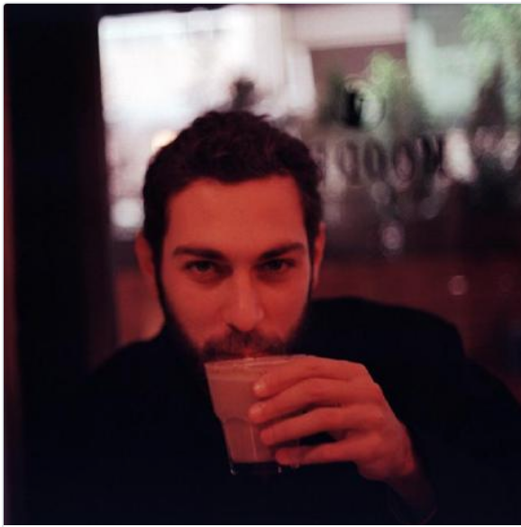
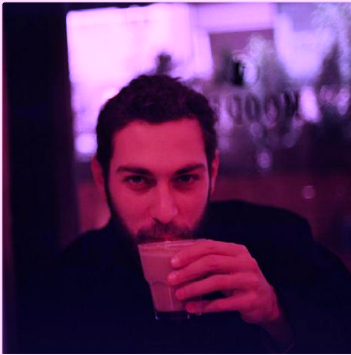
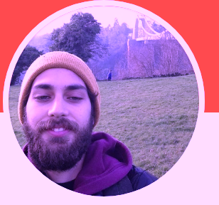

<!DOCTYPE html>
<html>
<head>
  <script src="../jspsych-6.0.5/jspsych.js"></script>
  <link rel="stylesheet" href="../jspsych-6.0.5/css/jspsych.css"></link>
  <script src="../jspsych-6.0.5/plugins/jspsych-html-button-response.js"></script>
  <script src="../jspsych-6.0.5/plugins/jspsych-image-button-response.js"></script>
  <script src="../jspsych-6.0.5/plugins/jspsych-image-keyboard-response.js"></script>
  <script src="../jspsych-6.0.5/plugins/jspsych-html-keyboard-response.js"></script>
</head>
<body></body>
<script>

var timeline = [];
var testStimuli = [];
var trial_pairs = []; 
var topImage = 'img/ger1.png'
var reps_per_trial_type = 4;

// #1 Win Pairs
winPairUp_w = {stimulus: "" + "<br>" + "<p> + </p>"+ "", pairType: "gain", pairOri: "a-up", win: true}
winPairUp_n = {stimulus: "" + "<br>" + "<p> + </p>"+ "", pairType: "gain", pairOri: "a-up", win: false}
winPairDown_w = {stimulus: "" + "<br>" + "<p> + </p>"+ "", pairType: "gain", pairOri: "a-down", win: true}
winPairDown_n = {stimulus: "" + "<br>" + "<p> + </p>"+ "", pairType: "gain", pairOri: "a-down", win: false}

// #2 Loss Pairs
lossPairUp_l = {stimulus: "" + "<br>" + "<p> + </p>"+ "", pairType: "loss", pairOri: "a-up", win: true}
lossPairUp_n = {stimulus: "" + "<br>" + "<p> + </p>"+ "", pairType: "loss", pairOri: "a-up", win: false}
lossPairDown_l = {stimulus: "" + "<br>" + "<p> + </p>"+ "", pairType: "loss", pairOri: "a-down", win: true}
lossPairDown_n = {stimulus: "" + "<br>" + "<p> + </p>"+ "", pairType: "loss", pairOri: "a-down", win: false}


trial_pairs.push(
  winPairUp_w, 
  winPairUp_w, 
  winPairUp_w, 
  winPairUp_w, 
  winPairUp_n, 
  winPairDown_w, 
  winPairDown_w, 
  winPairDown_w, 
  winPairDown_w,
  winPairDown_n,
  lossPairUp_l,
  lossPairUp_l,
  lossPairUp_l,
  lossPairUp_l,
  lossPairUp_n,
  lossPairDown_l,
  lossPairDown_l,
  lossPairDown_l,
  lossPairDown_l,
  lossPairDown_n
  );

var fixation = {
      type: 'html-keyboard-response',
      stimulus: '+',
      choices: jsPsych.NO_KEYS,
      trial_duration: 500
    };

var twoImages = {
    type: 'html-keyboard-response',
    stimulus: jsPsych.timelineVariable('stimulus'),
    choices: ['y', 'h'],
    trial_duration: 2000,
    data: {pair_type: jsPsych.timelineVariable('pairType'), pair_ori: jsPsych.timelineVariable('pairOri'), isItWin: jsPsych.timelineVariable('win')},
    //check what the response
    on_finish: function (data) {
      var responseGiven = jsPsych.data.get().last(1).values()[0].key_press;
      var pair_type = jsPsych.data.get().last(1).values()[0].pair_type;
      var pair_ori = jsPsych.data.get().last(1).values()[0].pair_ori;
      var win_type = jsPsych.data.get().last(1).values()[0].isItWin;
        // gain logic
      if (pair_type == "gain" && responseGiven == 89 && pair_ori == "a-up" && win_type == true) { //89 is y, 72 is h
        console.log('pair from gain; pressed y and ori was up and win is true')
        data.accuracy = 1
      } else if (pair_type == "gain" && responseGiven == 72 && pair_ori == "a-down" && win_type == true) {
        console.log('pair from gain; pressed h and ori was down and win is true') 
        data.accuracy = 1
        // loss logic
      } else if (pair_type == "loss" && responseGiven == 89 && pair_ori == "a-up" && win_type == true) {
        console.log('pair from loss; pressed h and ori was down and win is true, (loss 1)') 
        data.accuracy = -1
      } else if (pair_type == "loss" && responseGiven == 72 && pair_ori == "a-down" && win_type == true) {
        console.log('pair from loss; pressed h and ori was down and win is true, (loss 1)') 
        data.accuracy = -1

      } else {
        console.log('running else');
        console.log('responseGiven', responseGiven);
        console.log('pair_ori', pair_ori);
        console.log('isItWin', win_type);
        data.accuracy = 0
      }
    }
  }

var responseFeedback = {
    type: "html-keyboard-response",
    stimulus: function () {
        var responseAccuracy = jsPsych.data.get().last(1).values()[0].accuracy; // get the data from two trials prior
          if (responseAccuracy == 1) {
            return "You gained 1!";
          } else if (responseAccuracy == -1) {
            return "You lost 1!";
          } else {
            return "You gain nothing!";
          }
      },
    trial_duration: 1000
};

var testProcedure = {
    timeline: [twoImages,responseFeedback],
    timeline_variables: trial_pairs
};

timeline.push(testProcedure);

  jsPsych.init({
    timeline: timeline,
    on_finish: function() {
      jsPsych.data.displayData();
    }
  });

</script>
</html>